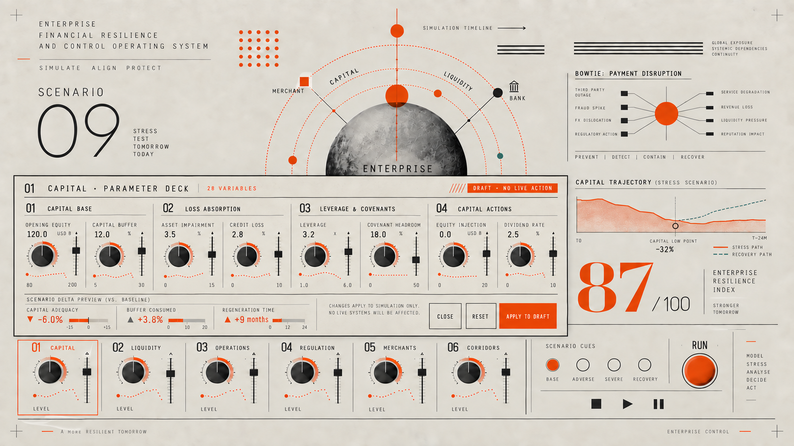
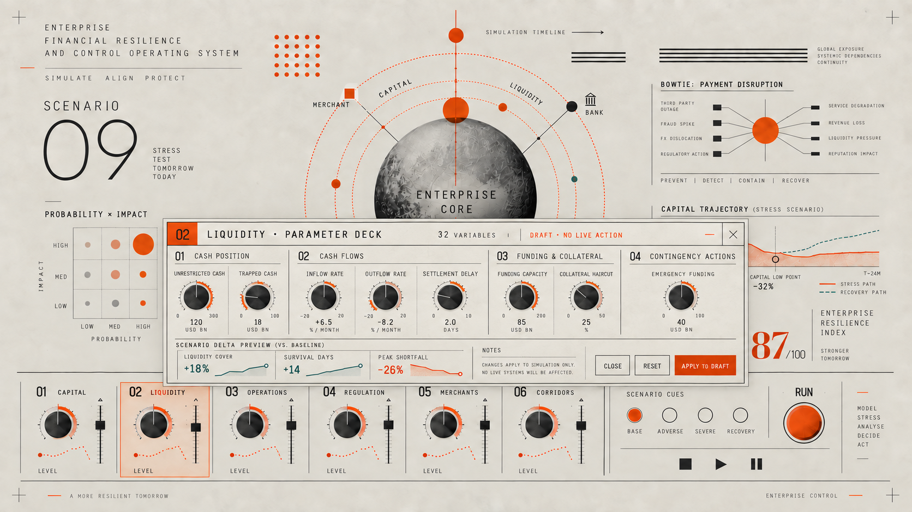
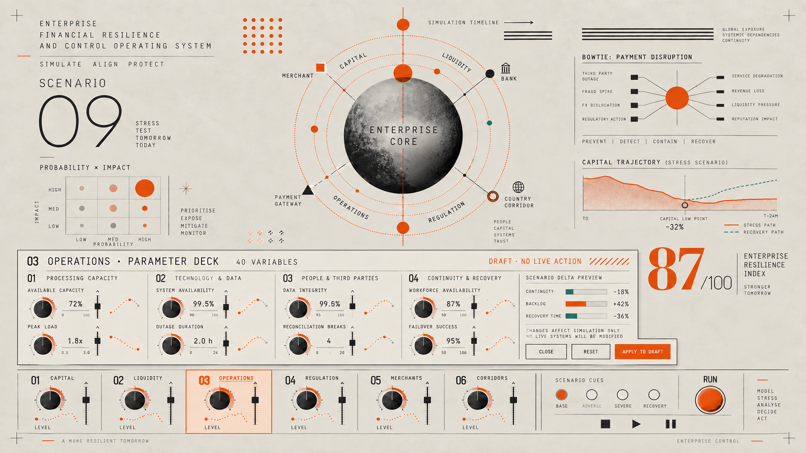
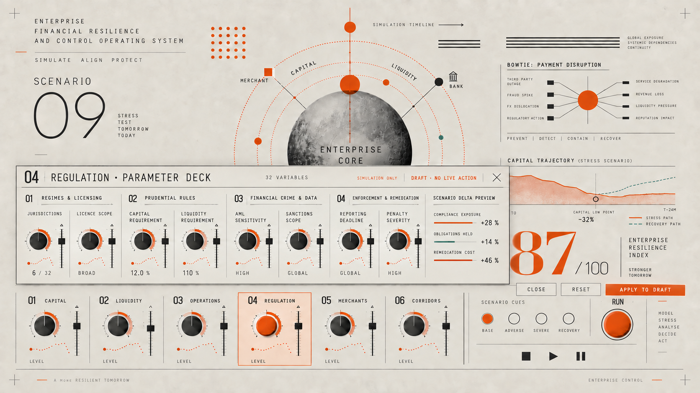
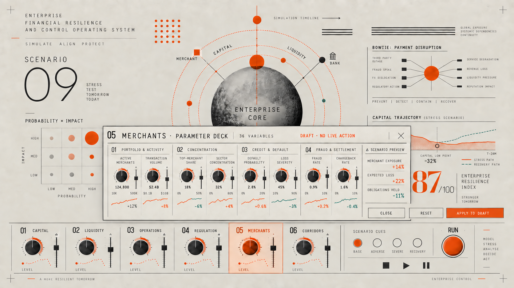
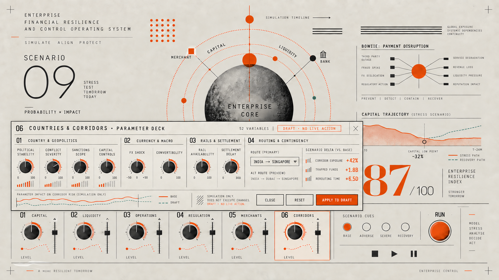

01 Capital
28 variables
Capital base, loss absorption, leverage and covenants, and capital actions.
Selecting a console channel opens its parameter deck above the controls. Each deck can be dragged and positioned within the workspace for the user's convenience. Every change remains a simulation draft, with downstream effects previewed before execution. The popup studies retain their V1.2 background; production applies them over the V1.6 unified matrix-core gradient model.

Capital base, loss absorption, leverage and covenants, and capital actions.

Cash position, cash flows, funding and collateral, and contingency actions.

Processing capacity, technology and data, people and third parties, and continuity and recovery.

Regimes and licensing, prudential rules, financial crime and data, and enforcement and remediation.

Portfolio and activity, concentration, credit and default, and fraud and settlement.

Country and geopolitics, currency and macro, rails and settlement, and routing and contingency.